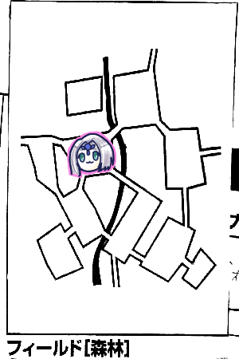
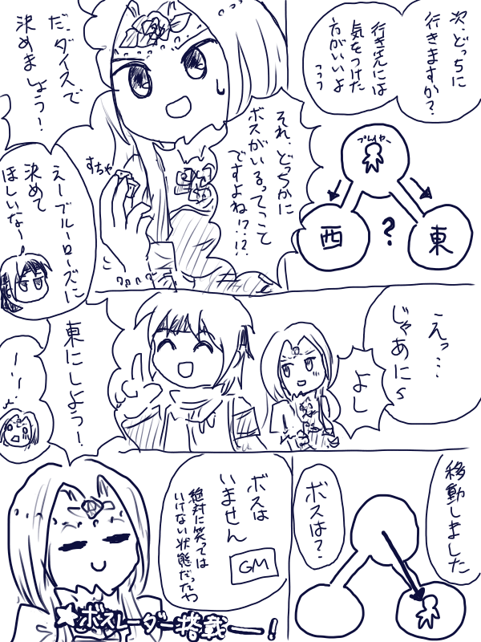

3ヶ月ぶりのエターナルですよ奥さん！
前回8月にセッション前日にレポ書いてますとか言ってますが、あの翌日のセッションは都合上艦これセッションになりました。
こちらもキャンペーンになる予定らしいので前回のリプレイとか書いておけばよかったなとうずうず。メモは残ってるから思い出す限り書いてみようかしら…？
さて、前回はタッシュ先生が単騎で主を倒したところからです。
まだ外にいますので、回復や買い物はできません。
GM「そうだ、主を倒したということで、タッシュ先生、主討伐記録にかっこよくチェックをどうぞ」
1年半かけてようやく主1匹目！

GM「では主を倒したエリアのフリーアクションからです」
みぞれ「ここって釣りできるんだっけ？」
GM「川沿いなので釣れます」
みぞれ「じゃ釣ります。えーと、そう言えば私、誰かから釣り用に指輪貰った気がする」
GM「大丈夫？言質取れてる？取れてない場合はナナシのライトメイスみたいにロストするからね」
みぞれ「貰った記憶はあるんだけどアイテム欄にないんだよね…」
ブルーローズ「私の指輪ですね、じゃ改めて渡します」
後で確認してみたらブルーローズがみぞれに割る用の指輪を渡してるみたいですが、多分渡そっかーという話が出た後に別の話になって忘れたんだと思う。よくある話。
みぞれ「それじゃもらいまーす、帰ったら買って返します」
GM「セズウィック村じゃ買えないよ」
「商業値が名声値の1/5しかないからな」
みぞれ「指輪装着！これで器用度が1上がってボーナスが4になりました！」
タッシュ「えっなんでそれで指輪つけてなかったの」
みぞれ「能力値上がった時にあと+1でボーナス上がるの気づいてなかったの…」
「主って剥ぎ取れるんだっけ？」
「データ見ると剥ぎ取れるぽい」
ナナシ「剥ぎ取りまーす！…1、2です…」
タッシュ「あれ？ナナシって人間じゃなかったっけ？」
ナナシ「人間だったかもしれない！」
シャドウです。諦めましょう。
GM「ちなみにポイズンモールドは7から豊穣の土2000ガメルが手に入ります」
みぞれ「振り直しってできないんだっけ？」
GM「そういうスキルやアイテムは知らないですね」
みぞれ「いや施設で」
タッシュ「生死判定と探索の振り直ししかないな」
GM「では自動で緑の染料、出目3で肥沃な土が手に入ります。ちなみにこのポイズンモールド、かけらも入れて実にHP160の敵でした」
「それを1人で撃破するタッシュ先生」
今思えば真面目にやってたら1ゾロポイントが溜まってたかもしれないですね、だるいですが。
みぞれ「てことで改めて釣りします、ころころ…成功！数は…ころころ、3匹！よっしゃ！釣り名人と呼んでくれ！」
「そういやあと何匹？釣ればいいんだっけ？」
「誰か記録してる？」
なんと誰も記録してませんでした。
みぞれ「ま、待って？ラスト1匹じゃなければ達成だったのは覚えてる」
GM「記録がなければやり直しになりますよ」
「キャッチアンドリリース」
「みぞれちゃんは釣れば目的達成だと思ってるんじゃ？」
「ルーンフォークAI萌えについて」
GM「コメディ回かよ」
みぞれ「開幕から飛ばしてんなー」
「おい当事者」
みぞれ「えーと、渓谷の入り口で3匹、ウンディーネで2匹、主のところでピーター
サイレントムーブ使ってもらって3匹、で今3匹釣って11匹」
GM「リプレイあってよかったねみんな！」
「ライトメイスなくすのとはわけが違うからね！」
ライトメイスネタにされすぎ問題。
南東へ進みます。

ブルーローズ「イベント振ります！5！」
GM「森林イベントです」
ブルーローズ「5です！」
GM「君たちの目の前にある草原から胞子が舞い上がった！生命力抵抗判定をしてください」
ピーター「ウィンドガードを自分にかけます」
ナナシ「アンチボディ使っていいすか」
GM「はい。目標値は13です」
みぞれ「失敗しました。これバイクも判定しますか」
「胞子だからいらないんじゃないかな？」
ブルーローズ「失敗しました」
GM「ではブルーローズとみぞれ、それぞれ1d6をどうぞ」
みぞれ「ころころ…1」
GM「器用度-6してください」
みぞれ「げっ、実質ボーナス1マイナスか、指輪と相殺だな」
ブルーローズ「2です」
GM「ブルーローズは敏捷度-6です。この病気は累積し、能力値が0になったら死にます。次の日の朝6時まで継続します。キュアディジーズで治すことができます」
ブルーローズ「私使える！けどMP4だからどうしよう？」
「次の日の朝ってことはフィールド移動したら回復するからいいんじゃない？」
みぞれ「釣り終わってなければ回復してもらってたとこだけど、もう達成してるし。てことでこのまま釣りしまーす…う、いちたりない」
「胞子がなければ！」
「割りますか？」
みぞれ「さすがにそこまでする必要ないでしょ」

山岳フィールドに移動します。
GM「集落のあるエリアです。イベント判定どうぞ」
ピーター「5です」
GM「山岳イベントです」
ピーター「4です」
GM「突風が吹きます。生命抵抗力判定、達成値15でどうぞ」
ピーター「ウィンドガードかけます」
GM「ダメです、突風なので咄嗟にかけるのはNGとします」
ブルーローズ「ファンブルしました」
というか、全員落ちました。
GM「落ちた人、10m落下扱いで処理してください」
「10mはやばいな」
ピーター「村なんでMP全部使います、ホバリングを全員にかけます」
みぞれ「あっバイク忘れてた、どうしよ、ワイヤーアンカーとか使える？」
「みぞれは大丈夫でもみぞれがバイクを支えられるかどうか」
諦めてバイクに30点の物理ダメージ。

南へ向かいます。
GM「おっと忘れてた、ブルーローズ、今日の主を振ってください」
ブルーローズ「5です」
GM「ふむふむ。ではイベントをどうぞ」
みぞれ「6です…」
ナナシ「みぞれって戦闘狂だよね」
みぞれ「好きで出してるんじゃないもん！」
GM「相手は4体います。全員人間です。前衛3人後衛1人、後衛は魔法の杖を持ってますね」
ピーター「セージ判定します」
魔道に魅入られた魔法使いLV4
腕利きの傭兵LV5
山賊の首領LV4
敵「ははは、モンスターじゃなくて悪いな！この辺で探索帰りの冒険者を襲うのが小銭かせぎにはちょうどいいんだ！」
ブルーローズ「ふふふ、貴方たちいい度胸してるわね？ここにはあの森林の主を倒した先生がいらっしゃるのよ！」
敵「ふん、ハッタリだな！」
ブルーローズ「これが証拠よ！と緑の染料をちらつかせます」
敵「そんなもん北にいけばいくらでも手に入るだろうが！」
ブルーローズ「えっそうなの」
ナナシ「俺のせいなの」
ブルーローズ「涙拭けよ。こいつら買収できますか」
相手「ここを通りたければ1人500ガメル置いていってもらおうか」
ナナシ「ふん、そちらこそ1人500ガメル、いや1人1000ガメル置いていってもらおうか」
「どっちが悪党だよ」
先制判定。
ピーター「イニシアチブブースト使いまーす」
ナナシ「16です」
GM「プレイヤー先行でーす」
ピーター「カード消費してパラミス前衛3人にうちまーす」
GM「首領1人だけ成功しました」
みぞれ「グレネード撃ちます」
GM「腕利きだけ抵抗失敗しました」
みぞれ「11点です、帰り道だし続けてバイクにグレラン撃たせます」
GM「全員抵抗しました」
みぞれ「低いなー、9点です」
ブルーローズ「パラミス抵抗してる方の首領青を攻撃！」
ナナシ「ブルーローズがブルーを殴る！
ブルーローズ「マッスルベア使おうか悩む…キャッツアイだけでいか、魔力撃トンファーで…ファンブル」
GM「今日のブルーローズは稼ぐなあ」
ナナシ「もしかして今日は月曜日かな？」
ブルーローズ「今のはねーフェイントよ！！！追撃します！」
GM「いちたりない、回避失敗、パラミスがなければ！」
ブルーローズ「20点！撃破！貴方たちには私たちの伝説を持ち帰ってもらうわ！」
GM「加護(運命変転)使う暇がなかった」
ナナシ「腕利きを攻撃します、クリティカル」
GM「それは回避できない」
ナナシ「9点です」
GM「じゃあこっちいくよー」
タッシュ「待って待って、まだ行動してない」
GM「はりあーっぷ」
タッシュ「うーん、無難にカンタマ撃っとくかー、前衛4人に」
ナナシ「ナナシカンタマいらないよー」
タッシュ「ほんとに？」
ナナシ「引かれてもあんまりかわらなーい」
タッシュ「自分のダイス目に自信ある？」
ナナシ「ある！」
ブルーローズ「さっき失敗しまくってたのに」
タッシュ「ナナシ入れておこう…はい発動、あっぶな(出目1、2)」
GM「聞いていい？ブルーローズ命中と回避いくつある？」
ブルーローズ「聞かないでください…えーと」
ナナシ「あああああー」←かき消そうとする声
GM「全力でいくかー」
「おっとー？」
GM「魔法使いがブルーローズにパラライズをかける」
ブルーローズ「ひー」
GM「17精神抵抗で」
ブルーローズ「7出せば抵抗できる…あっ4だってー」
GM「命中-2、18ラウンドね」
ブルーローズ「永久じゃん」
ナナシ「これ泥沼になるやつだ」
GM「でないとこっちの勝ち目ないんだもん」
GM「ナナシの回避いくつある？」
ナナシ「13」
GM「オーバスペックだなー、金属鎧着てる？」
ナナシ「Nooooooooooo」
ピーター「フェンサーは金属鎧着ないでしょ」
GM「牽制攻撃します、15」
ナナシ「21だからブレードスカートの刑」
ブルーローズ「それ刑罰だったんだ、不敬罪かな」
みぞれ「不敬罪なの？」
どっちも相手に対して不敬だと思った。
GM「じゃあ次プレイヤーのターン」
「えっ首領いいんですか」
GM「そうだった、それじゃ首領がブルーローズに攻撃します」
ブルーローズ「回避しました」
GM「今度こそどうぞ」
ブルーローズ「首領殴っちゃいますね、魔力撃トンファーで」
GM「8で回避できる、パラライズで可能性上がってるのを感じる…失敗」
ブルーローズ「なーぐーりーます！はい撃破！」
ナナシ「腕利きに挑発攻撃レイピアで！ぶっさす！」
GM「だめでーす失敗」
ナナシ「あっクリったー回して14点！」
みぞれ「ソリバレのみで後ろの魔法使い狙います、お、高い！19！」
GM「回避できません」
みぞれ「12点！」
タッシュ「ファナティをブルーローズにかけます」
ブルーローズ「わーい」
GM「これでパラライズ相殺になるのか」
GM「それじゃこっちのターンね、殴ろうかな、ナナシに向かって牽制攻撃、ころころ…剣の加護使用でひっくり返す！19で」
ナナシ「あ…18」
GM「16点ダメージね」
GM「ナナシ精神抵抗いくつ？」
ナナシ「12、カンタマ入れたら14」
GM「悩むなあ、何をしたらこいつにとって有効なんだろう」
ナナシ「自決」
ブルーローズ「土下座」
GM「リープスラッシュをナナシにかけよう」
ナナシ「いきます、ドゥシュクシュ(サイコロ振る効果音らしい)…なんぼやろ、23かな、抵抗しました」
GM「ダメージ9点、半減で4点です」
ブルーローズ「前衛潰すとライトニング飛んでくるかな？」
ピーター「最悪魔法使いは3人で潰せるでしょ」
ブルーローズ「じゃ腕利き殴ります、ファナティしゅいんしゅいん、21」
ピーター「ドラゴンボールの覚醒した時の音やめよう？」
ブルーローズ「俺は怒ったぞー！」
ナナシ「フリーザー！」
ブルーローズ「18点です！追加攻撃！」
GM「17、1引いて16！避けられません！」
ブルーローズ「ダメージ出します！よし撃破！」
ナナシ「前に出て普通にレイピアで魔法使い攻撃しまーす」
GM「回避失敗しました」
ナナシ「13点ダメージ」
みぞれ「あと3点！」
タッシュ「じゃあ前出て殴るか」
「タッシュ15m移動できるの？」
タッシュ「移動力ほしくてブーツ履いたからいける」
ブルーローズ「走る漬物石」
タッシュ「5点ダメージ」
みぞれ「わあぴったし」
沸き起こる拍手！
タッシュ「近接攻撃した方が拍手多いんだよね…」
ブルーローズ「見ましたか！これがタッシュ先生の力ですよ！」
ナナシ「主を倒した力は伊達じゃないとわかったろう！」
ブルーローズ「じゃあ首領剥ぎ取りましょう、命が惜しければー？どうすればいいんでしたっけー？」
「悪党になってる」
GM「1d6×50ガメルです」
ブルーローズ「貴方の命のお値段はー？」
みぞれ「魔法使いはぎます、9」
GM「銀貨袋1d6×100」
みぞれ「6！500ガメル払っておけばよかったですねー？」
タッシュ「首領はぎます、4…こいつ何も持ってないな」
ピーター「探索判定します！クリティカル！」
ブルーローズ「キュアハートをナナシにうちまーす」
ピーター「大丈夫？アンデッドじゃない？」
ナナシ「どっちかっていうと君の方がアンデッドだからね？」
ピーター「なんで？」
ナナシ「一回死んでるから」
GM「それじゃ移動先を決めてください、行き先には気をつけた方がいいですよー？」
「これ東か西どっちかに主がいるわ」
ブルーローズ「奇数偶数ってのはどうだい？」
ナナシ「俺はブルーローズに判断してほしい」
ブルーローズ「うーんうーん、じゃ西！」
ナナシ「東に行きましょう！」
みぞれ「同じことを考えた」
ブルーローズ「…それがパーティの総意なら」

南東へ
「ボスは？」
「ボスはー？」
GM「ボスはいないです」
ブルーローズ「……」

タッシュ「イベント2です」
GM「何も起きません」
探索して更に南へ

ナナシ「イベント5です」
GM「山岳イベントです」
ナナシ「1です」
GM「崖崩れが発生しました、達成値12で回避判定をどうぞ、失敗した人は20点物理ダメージで」
みぞれ「バイクが失敗したわ…次崖崩れ起こったらバイク壊れる」
タッシュ「アースヒールかけとくか」
みぞれ「お願いします」
ここは白い悪魔がいるのでみんな気をつけて探索します。

更に南へ移動、村の入り口まで戻ってきました。
ピーター「主いますか？」
GM「さすがにそこには…うん、いない」
ブルーローズ「イベント3です」
GM「漁師イベントですね」
「撃たれる！」
ブルーローズ「じゃあみなさん伏せてください、3」
GM「これは…全員引っかかるのか、漁師の罠のトラバサミがありました、目標12です。レンジャースカウトは危険感知で、ピーターは種族特性で冒険者レベルで判定できます。失敗した人は13点物理ダメージ」
みぞれ「そう言えば同行者いなかったっけ」
ブルーローズ「ロベルト？」
タッシュ「ハロルド！」
GM「処理しちゃった、次からは忘れねぇ」
GM「村に戻ってきました！では先程の主の正解を言います。ブルーローズ正解！もうあの時こっちは絶対笑ってはいけないエターナルになってた」
「ブルーローズ主レーダーついてるな」
ミッション処理をします。
ミラベルさんに魚を引き渡すと報酬で1人あたり1500ガメルもらえました。
みぞれ「今借金どうなってるんだっけ？報酬半額引かれる？」
ピーター「今11000返してる、あと9000ガメル」
GM「全員が半額ずつ出すか、死んだ当事者が半額出すか」
みぞれ「全員でいいんじゃない？」
ピーター「じゃ残りあと5000ガメルぐらいですね」
引き続きミッション処理。プリズムフィッシュ11匹をミラベルさんに渡します。
GM「プリズムフィッシュは6匹釣り上げるごとにボーナスがあります」
「うわあああ1匹足りない！」
GM「ボーナスとしてミラベル特製フィッシュボールがもらえました。10個ためるとここでしか扱えない、獅子の体に老人の顔に巨大な翼を持つ特別な騎獣が使えるようになります」
「スフィンクスかな」
GM「うちではクスクス君と呼んでいます」
「スフィンクスだ」
GM「ミッション達成によりライダーギルドの騎獣が強くなります。また、騎士団のk獣も強くなって防衛ポイントが3ポイント上がります」
「また武力強化されてしまったな」
「セズウィック村の要塞化が止まらない」
ブルーローズ「脳筋の村」
ナナシ「商業値…」
村長「尖った村おこしだな」
ピーター「冒険者たくさんスカウトしてくるしね(遺跡で懐柔した奴らのこと)」
タッシュ「冒険者のアンケート第1位は『アイテムがちょっと手に入らないんだよねー』」
存在を無視されていたハロルドと別れます。
ハロルド「ありがとう、僕の店を持てるまで頑張るよ」
ピーター「店建つの商業値いくつ必要なんだったっけ？」
GM「10点」
「今は？」
「5点、さっきのミッションで6点」
ナナシ「首切り刀鑑定してほしい」
GM「シドは鑑定できないねー、できるのはケイトの方」
ブルーローズ「さっき脱がせた魔法使いセージスキル持ってるんじゃない？鑑定できたのでは？」
シド「おう、無事戻ってきたか」
ナナシ「3ヶ月ぶりだな」
みぞれ「メタい」
シド「何か収穫はあったか？」
ブルーローズ「主を倒してきました」
シド「まさか？証拠はあるのか」
ピーター「緑の染料と肥沃の土…は証拠にならないんだっけ？」
みぞれ「主かけら持ってたよね？あれはダメ？」
シド「あいつを倒したというのか…この依頼はレベル6になったらポップアップするはずだったんだが…」
「先走った」
シド「しかも依頼を受けた場合には防衛ポイントが使えたのに」
ブルーローズ「あれ？ボスに使えるってこと？」
GM「ボスには使えないけど取り巻きとか道中の敵に使える。てことで主討伐の報酬は1人あたり4000ガメルね」
「おおー」
「これで借金返済できる」
ピーター「それじゃ死んだ人の報酬から2000ガメルずつ引いて、残りはパーティー財布から出しましょう」
シド「今度は主討伐前にミッション受けておくといいぞ」
「討伐するつもりなかったんだもの！」
「あっちから襲ってきたから返り討ちにしただけだよね」
各自経験点を受け取り、成長処理をします。
みぞれ「すいません、両手攻撃できないのにツーハンド武器使ってました、でもスキルによる補正も指輪の命中率補正もつけてませんでした」
「うん、忘れてるなーって思ってた」
みぞれ「ライダーLV5にするので改めて人馬一体取ります、すいませんでしたー」
GM「では依頼の選択をしてください、こちらが依頼になります。その中にあるRが付いてない『荒地の戦い』は一度しかポップアップしません。つまり成功しても失敗してもリトライできません」
「ルキスラに行きたいからこれを受けようか、荒地は通り道だし」
GM「ちなみに全体の経過日数は記録してあって、それによって消えるクエストもあります。一瞬しか現れないクエストはまずないので見逃すことはありませんが、スルーしてると消える可能性はあると覚えておいてください」
ピーター「ところでGM、このストーンウォールって妖精魔法なんですが、効果がえげつないのでどうしましょう」
ストーンウォール、妖精魔法(土)ランク8魔法。石の壁を立て、射撃や貫通の攻撃を防ぐ。視線も通らない。破壊したりトンネルという妖精魔法で開けたりはできるが、敵の後衛の前に生成したら後衛をほぼ完全に無力化できる。
しばらくこれで議論が発生し、セッション後もあーだこーだ言ってました。
ひとまず今回は縛ることに。
ピーター「てことで今回は妖精魔法土編成でいきまーすよろしく！」
依頼を受けに騎士団へ赴くと、団長ゼノヴィアさんはいませんでした。
代理でいた男に、荒地のオアシスが蛮族の攻撃を受けたと聞かされます。
そこにゼノヴィアが向かったが包囲されている模様。
依頼はその蛮族を駆逐する、という内容です。
GM「現在、そいつらによって交易路を押さえられているので商人が来れなくなっています。逆に言うとここを解放できれば流通が確保できます」
「商業値きた」
「これはキマシ」
GM「報酬は2500ガメルになります」
「これ失敗したらゼノヴィア死ぬかな？」
「騎士団の依頼が受けられなくなるかも」
ブルーローズ「ゼノヴィアさんとこの町の商業値アップのために受けます！」
GM「ちなみにこの依頼は関所を放置していたために発生しました」
「あったなそんなの」
「完全に忘れてたな」
GM「今回は5と6でモンスターが出てきます」
出発！

荒地フィールド、村の入り口
ブルーローズ「イベント1です！なにもない！」
平和だった。幸先良いですね。
「そう言えば主の位置は振らなくていいの？」
GM「イベントで決まっているので振る必要ないです」
「え、どこにいるんだろ」
「巣かな？」
ひとまず探索。
GM「ここで蛮族がオアシスを襲っている判定します、我こそはという者は2d6を3回振ってください」
ナナシ「8」
ピーター「7」
ブルーローズ「タッシュ先生いつもの調子でお願いします」
タッシュ「4」
ブルーローズ「さすが」
GM「オアシスが合計でダメージ19点くらいました。これは朝に判定します。HPは100なので残りHP81です」
「もたもたしてるとダメなやつか」
「どうしよう、これ先に街行く？行った方が劇的に変わる感じ？」
ナナシ「絡め武器が欲しいんだよね」
GM「Aテーブルの武器ならセズウィック村で買えるよ」
ナナシ「まじで？」
GM「こちらがその表になります、今発展レベル3なので魔晶石も買えます。どうする？買ったことにしてもいいよ」
ナナシ「うーん、やめておきます」

南へ移動しました。
ブルーローズ「こけー！」
「やめて」
「シャレにならん」
GM「主はいませんが、そこには蛮族部隊がいます」
「お？」
「あれ、オアシス包囲してるんだっけ」
「てことはこれ南にもいるんじゃないの？」
ピーター「ウィンドボイス使って背後から騎士の増援が来たぞーと叫ばせます」
GM「それ届くの？」
ピーター「100mです」
GM「さすがに無理とします。相手は10体、全員蛮族です」
「多いな」
ブルーローズ「バニッシュかけてみる？」
ピーター「逃げられたら合流されるんじゃないの？」
GM「5体が人間サイズ、2体が剣と盾を持ってます。2体が人間の子供サイズ、残りがボスになります」
「会ったことあるならモンスターリストに入ってるから名前はわかるはず」
GM「(しばらくリストを眺めて)あれ、今まで会ってないんだ、こんな根本的なモンスター」
ピーター「セージ判定しまーす」
GM「はい。5体のやつはボガード。剣盾持ちはボガードトルーパー。小さいやつはディープグレムリン。ボスはドレイクです。こいつにはかけら入ってます。なおかけら持ちは防衛ポイントで排除できません。弱点は全員抜けてます」
「ディープグレムリンの操霊魔法LV4が怖い、こいつをを防衛ポイントで処理しよう」
ピーター「イニシアチブブースト入れます」
ナナシ「先制判定します！ケンタウロスレッグ入れます！…ファンブル」
ピーター「ふ、振り直し！施設で！」
タッシュ「探索と生死判定しか振り直せないね…」
ブルーローズ「こ、ここはみんなで生き残ろう！」
みぞれ「しにそう(初期位置前衛)」
GM「ドレイクが前衛にポイズンクラウドを使用します」
みぞれ「抵抗失敗しました…」
GM「ではダメージ3を6ターンで」
みぞれ「うえええ」
GM「ボガードAがみぞれに攻撃」
みぞれ「当たりました」
GM「8ダメージです、2発目は…ファンブルしました」
ボガードBとCの攻撃はなんとか回避。
ボガードDの攻撃は1発当たってしまいます。
GM「ボガードEの攻撃」
みぞれ「避けられません」
GM「追撃いきまーす」
みぞれ「しにましたー、生死判定は成功です」
GM「ボガードトルーパーがタッシュ先生に攻撃。マッスルベア入れます…ファンブルしました。2匹目いきます」
ナナシ「土下座の準備はできている！」
タッシュ「避けた！上げてて良かったファイターレベル」
ブルーローズ「こいつら全員にバニッシュかけようと思うんですが」
タッシュ「かけてください」
ブルーローズ「全員バーサクしたらごめんなさい！発動しました…あれ、これ対象前衛からランダムになるのかな？」
「味方3人敵7体中の5体だから最低でも2人には当たるでしょ？やろう」
ブルーローズ「それじゃ10人なので10面振ります。1?5がボガード、6、7がボガードトルーパー、8?10が味方です。ころころ…8、まずナナシに当たった。ころころ…10、タッシュ先生。ころころ…9、はいブルーローズ、嘘でしょ？残りは8面にして…5ボガードE」
GM「とりあえず抵抗します…かかりました
ブルーローズ「次7です、ボガードトルーパー」
GM「抵抗します、かかった」
ブルーローズ「ではどの効果がかかったかを判定します。ころころ…10！対象は逃げ去る！」
GM「乱戦状態から逃がしますか？選択できますよ」
ブルーローズ「もちろん逃がします！」
ボガード＆ボガードトルーパー「きゃー(逃走)」
ブルーローズ「あと異貌化します！」
ナナシ「な、お前ナイトメアだったのか！」
ブルーローズ「今更！？」
ピーター「どうしようかな…」
ブルーローズ「生きたいです」
ピーター「前衛陣にスネア行きます、こういう時だけファンブルするんだよね」
「フラグ建築やめて」
ブルーローズ「1個ずつ振ると心の負担が減るよ！」
ピーター「じゃあ1個ずつ…大丈夫そう、18！」
GM「はい全員かかりました」
ピーター「はい転倒！全判定に2ペナです」
GM「次ー誰が残ってる？」
みぞれ「死んでます、魔導バイクがドッドッドッドッって音立ててる」
ナナシ「ごめんなさいぃ｡ﾟ(ﾟ´ω`ﾟ)ﾟ｡」
ナナシ「挑発攻撃…へっ」
GM「何故そんな自嘲気味に」
ピーター「狙われなくて寂しかったんだよねー？」
GM「はい無理です避けられない」
ナナシ「9点ダメージ！」
GM「防護点7、ビートルスキンでダメージ0です」
タッシュ「プロテクション4倍がけ、味方全員に…発動、全員防御力＋1点です」
GM「ではみぞれさん毒を受けてください」
みぞれ「まじで、死ぬわそれ」
タッシュ「手番が来ないと発生しないから受けないんじゃない？」
GM「まじか…ほんとだ手番の後って書いてある、残念」
GM「タッシュ精神抵抗いくつ？」
タッシュ「10」
GM「分が悪いな、じゃあ物理で…ドレイク前進します、魔力撃でタッシュに攻撃」
タッシュ「はい当たり」
GM「25点です」
タッシュ「11点残った」
GM「トルーパーは挑発攻撃くらってるのでナナシに攻撃します、全力攻撃…ファンブル」
ナナシがすごい顔しました。
ピーター「補助動作で起き上がらないと転倒したままなんですけどいいですか」
GM「あっそうだった、それじゃトルーパーは補助行動で立ち上がります、続いてボガード補助動作で起き上がります、タッシュを攻撃」
タッシュ「回避」
残りのボガード3匹も順調に回避しました。魔法戦士つよい。
ブルーローズ「バニッシュします、発動成功！じゃランダムで10面体振りまーす、7ナナシ。残り8人なので8面体振ります。4、ボガードD」
GM「抵抗します、同値抵抗」
ブルーローズ「7、ブルーローズ、5、ドレイク！」
GM「4で抵抗します、はい抵抗」
ブルーローズ「5、タッシュ。以上…」
「なんで2回とも全部味方に当ててるんですかね？」
「これタッシュ先生が沈んだら後衛に抜けられてしまう、ドレイク怖いし回復する作戦でいきましょう」
ピーター「じゃウィスパーヒール撃ちます！今は敵は誰もダメージ受けてないから問題ないはず！はい発動ー」
「あれ、ウィスパーヒールも5体ランダムだよ」
ナナシ「これやらないほうがよくない？」
GM「もう行使判定しちゃった」
ピーター「まじかーじゃしょうがない、タッシュ先生に当たることを期待して…よし当たった！そしたら札使ってヴォーパルウェポンをナナシにかけます」
ナナシ「久しぶりにこういうのやってもらった気がする
タッシュ「どうしよう、ブラントウェポンかな？いやこれ回復しないと危ないか？アースヒールを確実化でかけます」
GM「確実化？アースヒールを？」
タッシュ「ここで死んだら作戦が瓦解するだろうがー！」
ブルーローズ「MP90ある人のやり方は違うわー」
タッシュ「成功、回復しました」
ナナシ「やっべ、ルルブ見たらドレイク知能高いわ…でも挑発攻撃2だからー、こっちしか攻撃できなくなるわけではないけど命中2ペナ受けるのか」
ブルーローズ「挑発には乗らないけど気になって仕方がなくなるってことか」
ナナシ「あと挑発攻撃2はダメージ落ちなくなるんだった。さっき引いちゃったわ。まあいいやころころ」
GM「回避失敗しました」
ナナシ「はい1ゾロ」
GM「一応挑発攻撃は成功した」
ブルーローズ「ファンブル点入ったー」
ナナシ「いえーい(ハイタッチ)」
GM「アメリカのコメディ映画かよ」
GM「ボガード4匹がタッシュ先生を殴ります」
タッシュ「はい全員回避」
GM「ボガードトルーパーがタッシュ先生を全力攻撃」
タッシュ「回避」
GM「ドレイクが魔力撃でタッシュ先生を攻撃…う、低い」
タッシュ「回避」
ナナシ「ドレイクをウィザードがいなした！」
ピーター「アースハンマー(物理属性抵抗不可)をドレイク以外の5人に撃ちます。…ドレイクにもかけた方がいいかな？」
タッシュ「トルーパーが防護7だよ」
ピーター「まあいいや、MP2だし」
タッシュ「待て、そんな魔法が2で撃てるのか」
ピーター「スキルで減らしてるからね、ワンチャン全員にかけよう。はい発動ー」
ブルーローズ「ワンチャン1匹減らしたい、そしたらMP消費減るじゃない？キャッツアイマッスルベア、異貌化は既にしてます、魔力撃トンファーでトルーパー殴ります！…ファンブルー」
ピーター「そこの2人はさっきからなんなの！」
ブルーローズ「追加攻撃します！今のはフェイントよ！20！」
GM「回避無理！」
ブルーローズ「22点！出目4だけど22です！」
ナナシ「挑発攻撃でドレイクに攻撃」
GM「うーん、なかなか宣言忘れてくれないなー」
ナナシ「僕律儀なんで、ライトメイス以外は」
GM「回避失敗」
なんか見返してみたらダメージ記述がおかしいのね！でも最終的には合ってたぽいからよくわかんないや！
ピーター「ヴォーパルウェポンで自分の物理ダメージ＋2します」
ナナシ「ナナシにさえ1点だったのに」
ピーター「でアースハンマー発動しました、14点」
ブルーローズ「やっぱりこの世界岩が降ってくるのが一番怖いんだなー」
ナナシ「タッシュ先生ブラストいっちゃいますか」
タッシュ「ブラストは接触だから拡大数で増やせないんだよね、トルーパー沈めるならエネボでいいんだけどこいつなら問題ないんだよね」
ピーター「ふぁーーーさっき転んだ時にスタークラウド(補助行動封じ)使ってもらえればよかった！」
タッシュ「んー、事故る可能性があるからトルーパーにエネボ撃ちます。うわひっど、出目1、2」
GM「抵抗しました」
タッシュ「11点ダメージです」
GM「じゃこっちのターンね。ボガード4匹がタッシュに攻撃」
タッシュ「全回避」
GM「トルーパーがビートルスキンマッスルベア入れて全力攻撃」
タッシュ「回避」
GM「ドレイクが魔力撃でタッシュに攻撃…11」
タッシュ「避けれそうな気がする！よし避けた！」
ブルーローズ「ここはトルーパーに攻撃かな？」
ナナシ「トルーパーはタッシュ先生が責任を持って処理してくれる」
「ドレイクかけら入ってるからHP+30されてるし、ブルーローズにぶちのめして欲しい」
タッシュ「まずピーターにボガードなんとかして欲しいんだ」
ピーター「はーい、アースハンマー14点！」
ブルーローズ「抵抗も回避もできないの、誤植じゃないんだ」
「ナナシには天敵の魔法だね」
GM「ボガード全部落ちました、トルーパーも弱点の土属性ダメついて死亡」
ピーター「副行動でパラミスをドレイクに撃ちます」
残りドレイクのみ！
タッシュ「後ろ下がります」
GM「うー、タッシュ倒して後ろ行きたかったのに」
タッシュ「みぞれにアウェイクンして後ろに下がってもらえば？」
GM「起きた直後は行動権利ないよ」
ブルーローズ「戦闘不能の人を後ろに持って行くことできるの？そしたら後ろでアウェイクンポーションか何か使って起こす」
GM「冒険者レベル+筋力で12でOKとします、ダメなら離脱そのものができません」
タッシュ「それならそれでいいや。成功しました、みぞれつれて下がります」
ブルーローズ「お姫様抱っこですか！？」
タッシュ「そんなバランス悪いことできません、俵担ぎです」
ブルーローズ「魔力撃トンファーでドレイクさんの綺麗な顔を殴り飛ばします！」
ナナシ「ブサイクかもしれないじゃん」
ブルーローズ「ドレイクだよ！？かっこいいに決まってるじゃん！18！」
GM「回避します、15、ダメです」
ブルーローズ「殴ります！」
ナナシ「フェイントはなしだよ」
ブルーローズ「ころころ、24点！追加いきますー」
GM「回避失敗」
ブルーローズ「22点！」
ナナシ「俺キャッツアイ切れたっけ？まあいいや、挑発攻撃をドレイクに！18！」
GM「ダメです、14」
ナナシ「13点！」
GM「ドレイク竜形態に変身します、こっちのターン終了。魔物知識判定をどうぞ」
ブルーローズ「それHP回復するんですか？」
GM「します」
みぞれ「げっ、全回復じゃん、しまったタッシュ先生に適当な魔法撃ってもらえばよかった」
タッシュ「え？魔法じゃ削りきれなくない？」
みぞれ「ブルーローズとナナシの攻撃で残り2点だったんです…」
タッシュ「まーじーかー」
みぞれ「あれ、人間形態よりレベル1上がるけど、かけらも1個増えるんですか？」
GM「もちろんです。3部位に割り振ってますが、どこに割り振ったかは教えません」
みぞれ「どうせ胴体にガン振りしてる」
なんでこのキャンペーンカジュアルにピンチに陥るん？
ピーター「セージ判定します」
GM「はい、ステータス見ていいですよ。弱点は抜けませんでした」
ピーター「アウェイクンポーションをみぞれちゃんに使います」
みぞれ「今起きたら死ぬけどいい？こいつ光のブレスって後衛に飛ばせる攻撃持ってる」
ピーター「乱戦状態には撃てないんじゃ？」
GM「乱戦の外には撃てます」
ピーター「それじゃアウェイクンポーション飲ませて誰か回復する？みぞれちゃんに攻撃行かない可能性もあるじゃん」
みぞれ「飛行モンスターが飛行特効持ちを生かしておくわけがないじゃないですか…」
ピーター「それじゃパラミスを3部位全部に撃ちます」
ブルーローズ「翼1枚行きます」
GM「どっちの翼にしますか？赤が右翼、黄が左翼です」
「てかこの絵柄シュール」
ブルーローズ「じゃ右翼で！」
GM「回避失敗」
ブルーローズ「21点！追加攻撃！」
GM「当たりました」
ブルーローズ「1ゾロです…」
ナナシ「タッシュ先生いけますか？俺様子見しますよ」
タッシュ「様子見してどうする」
ナナシ「押し込めるかどうか様子見しますってことです！」
タッシュ「じゃ右翼にエネルギーボルト」
ナナシ「全部に撃てないんすか」
タッシュ「翼は1つ落とせば回避1下がるから…うーん、やっぱり全部いこう。数拡大3倍がけ、翼2枚と本体狙います、18」
GM「抵抗します、胴体と左翼抵抗失敗、右翼抵抗成功」
タッシュ「それが抵抗失敗しろよ！ダメージ12点」
ナナシ「挑発攻撃しなくていいかな、じゃそのきーずーつーいーたーつーばーさーをーあっ14」
GM「7で回避します。9、回避」
GM「第6ラウンドです、翼レッドがブルーローズに攻撃」
みぞれ「レッドどっちだっけ…右か」
GM「18」
ブルーローズ「10で回避、はい、3」
GM「17点物理ダメージです。次、翼左、20」
ビュー「17、命中しました」
GM「17点ダメージ」
ブルーローズ「残り20点ー」
GM「胴体ボディプレス！…違った牙って書いてあったからかみつき！ファンブル」
ブルーローズ「トランスファーマナポイント使います」
ナナシ「ここで？ブルーローズが元気な方殴ればよくない？」
ブルーローズ「私が殴りかかってかわされたらやばいから、2人合わせて片翼落としたい」
タッシュ「とりあえずエネボ確実化で右翼に攻撃。17」
GM「抵抗」
タッシュ「10点ダメージです」
GM「残りました」
みぞれ「おや…かけら入ってなければこれで落ちるはず。胴体ガン振りだと思ったけど均等割振りかな？」
ブルーローズ「それじゃ改めてトランスファーマナポイントでピーターにMPを…あっこれファンブルしたら渡そうとしたMP消えるんだこわ！」
GM「今日もうファンブル3回振ってる」
ブルーローズ「私4回振ってる」
GM「ブルーローズ先生！」
ブルーローズ「発動しました！」
ピーター「フレイムアロー3倍がけ、残りMP5です！19！」
GM「右翼失敗！胴体と左翼は抵抗成功！」
ピーター「14点ダメージです！」
GM「右翼落ちました。ちなみにこいつはかけら1つ入ってました」
↑あっ教えてくれるんだ、って思いました
ピーター「ブルーローズにパークメイル撃ちます」
ナナシ「翼は僕の方で止めます」
タッシュ「倒してくれてもいいんだよ？」
ナナシ「翼に挑発攻撃…14」
GM「ダイス8以上で回避、10、回避です」
ナナシ「へへっ」
GM「肉弾核弾頭(=ブルーローズ)を殴ります。翼行きます、21」
ブルーローズ「21？これは…どうすればいいんだ？」
タッシュ「クリティカルを出す」
ブルーローズ「無理」
GM「18点物理」
ブルーローズ「おっ、生きた生きた、4点残ってます」
GM「では牙の攻撃。2ゾロで14」
ブルーローズ「おっ4で避けられる？これはさすがに避けられますよー！よし回避！」
ピーター「攻撃していい？みなさん大好きアースハンマー×2」
GM「始まった」
ピーター「行使判定します、ファンブルしました」
GM「ようこそこちら側へ」
ピーター「ヴォーパルウェポンかけまーす」
タッシュ「これはもう撤退と考えて、リープスラッシュ数拡大、確実化までやるかなー？確実化はいいだろー！ころころ…ファンブル」
ブルーローズ「こちら側へようこそ同志」
タッシュ「同志じゃねーよーもーだから確実化しろって言ったのに」
「確実化いいだろーって言ったのお前なんだよなあ」
ブルーローズ「マッスルベアキャッツアイ、魔晶石2つ使います、トンファー魔力撃で左翼殴ります！21！」
GM「おしい、回避失敗」
ブルーローズ「よーしこれで！25点！」
GM「左翼落ちました、こいつにもかけら1つ入ってました」
みぞれ「じゃ残りのかけらは胴体に入ってますね。えーと残り58点です」
ナナシ「挑発攻撃！胴体！あ、キャッツアイ入れます！16」
GM「回避失敗です」
ナナシ「ここで60点ぐらいの大回転…あー、13点ダメージです」
GM「8ラウンド目、ブルーローズ生命抵抗してくれる？」
ブルーローズ「光のブレスか！」
GM「はい。17、いや挑発攻撃されてるから15」
ブルーローズ「ファンブルしました」
GM「15点直でくらってください」
ブルーローズ「-11になりました」
GM「生命抵抗してください」
ブルーローズ「これってファンブル表ないんだっけ？」
GM「回避判定にはあるけど生命抵抗にはないです」
ブルーローズ「生命抵抗判定成功しました」
みぞれ「あれ、主砲落ちたらダメージソースがなくならない？」
ナナシ「いざとなったらブルーローズ起こして一発かましてもらう」
みぞれ「いや起き上がった手番で行動できないから」
タッシュ「あ、でも光のブレス連続で撃てないから今がチャンス」
ピーター「はい、アウェイクンポーションをみぞれちゃんに使います！」
みぞれ「やったー復活！でもバイクは前にいるんだよね…？」
「前衛でドッドッドッて音立ててる」
ナナシ「胴体とランデブーします、17」
GM「回避失敗」
ナナシ「回れ！回らなかった13点」
タッシュ「アースヒールをみぞれに」
ピーター「確実化します？」
タッシュ「しますよ！成功、12点回復」
GM「それじゃ9ラウンド目、こっちのターン！…挑発攻撃使ってるんだよね、さっきブレスしたから…これ殴るしかないじゃん、15」
ナナシ「15？にやり、ころころ…22！スカートの餌食じゃああああああ！きた！」
ブルーローズ「スカート回った！」
ナナシ「19点！」
GM「じゃそっちのターンね、みぞれ2ペナくらって転倒してるの忘れないでね」
みぞれ「じゃ補助で立ち上がります」
タッシュ「バイタリティを全員にかけます、光のブレス対策」
ナナシ「挑発攻撃」
GM「ピーターに感謝するんだな！いちたりない」
ナナシ「15点！」
みぞれ「転倒で達成値下がってるから、安定を取って自分にヒーリングバレット撃ちます。はい最低値回復」
GM「こっちのターンですね」
ナナシ「ブレス打てるときは誰かにブレスした方がいいすよ」
「なに助言してるんですか」
GM「ナナシHPいくつあるの？」
ナナシ「34」
GM「34かー、では光のブレスをみぞれに」
みぞれ「生命抵抗ファンブル」
ブルーローズ「みぞれちゃーん！こちら側へようこそ」
ナナシ「なにこの起き上がりこぼし」
GM「16点ダメージです」
みぞれ「残り5ー」
「次のターンは光のブレスこないから大丈夫」
ナナシ「と思うじゃん？」
みぞれ「え！？」
ナナシ「こないよ」
ナナシ「挑発攻撃、15」
GM「当たった」
ナナシ「すっげーちょろい！14点！」
みぞれ「かけら圏内突入しました」
みぞれ「寝てた分全力でいきます！タゲサクリバレキャッツアイ！やった高い！21！」
GM「回避失敗」
みぞれ「ああんクリティカル1足りない！14点ダメージ！推定残り5点！ナナシさん結構削ってくれてたんだね、これは生き残れる！」
タッシュ「魔法数拡大確実化リープスラッシュ！14！」
GM「22、抵抗！」
タッシュ「17点！」
GM「倒れました！」
「うおお生き残った！」
「でもまだあと2チームいるんでしょこれ」
剥ぎ取りタイムー。
つるぎのかけら合計9個、その他諸々をてにいれました。
これ人間形態のままだと取り分減ってたんですね。
GM「さてどうしますか」
「撤退だ撤退」
GM「オアシスのHPが減るのをお忘れなく」
「1チーム撃破してるから2チーム×2d6ダメージ×村の出入りで2回でしょ？余裕」
ピーター「イベント振ります。1、平和！」
セズウィック村に戻りました。
GM「村に戻る前にオアシスのHPを減らします。2d6を2回どうぞ」
ナナシ「6」
タッシュ「7」
GM「それじゃ残り68点ですね」
ここで時間切れになりました！
各自準備をして再出発だ！
と、ここで今回の終了時点での技能を記述しておきましょうか！
見返してみると第2回と3回の時以外技能について全く書いてないような…
言い訳するとキャラシーは撮影してもらっていたのですが、それがセッション前なのか後なのか途中なのか分からなくて…
とにかく、今回からは記録しておきたいですね！
ブルーローズ
プリースト5
グラップラー6
エンハンサー3
バード3
たかみん評：最近神聖魔法使うようになってきたのはプリーストレベルが上がってきたからなんですね！
ピーター
フェアリーテイマー6
セージ5
アルケミスト5
たかみん評：見事な魔法職均等割り振りである(アルケミを魔法職とは呼ばない気がするけど魔法的な力を使ってるので、その)
タッシュ
ソーサラー6
コンジャラー5
ファイター4
たかみん評：魔法職均等割り振りかと思いきや突然のファイター4が光る、実際セッションのところどころで光る、侮れないこのスキル編成。もう立派な魔法戦士と言えるでしょう。
ナナシ
フェンサー7
スカウト5
エンハンサー5
たかみん評：毎回成長処理の時に冒険者レベル上げていい？上げていい？と言われるのを思い出すフェンサー7。エンハンサー5もあったんですね。次は先制判定頑張って。
みぞれ
マギテック5
シューター5
レンジャー3
エンハンサー1
ライダー5
フェンサー1
たかみん評：我ながらお前なんなのって感じが…さっさとシューター7まで取って回避スキル取ろうと決意しました。
こうして見るとだいぶ成長しましたね！
私は真なる庭の回以外精々レベル2?3キャラぐらいしか使ったことがないので、いろんなことができるようになって行くのが楽しくて仕方ないですよ！
育成が若干迷走しているのはご愛嬌ということで！
これは私がTRPGプレイヤーとして成長していく物語でもあるのです…いやどうかな…？